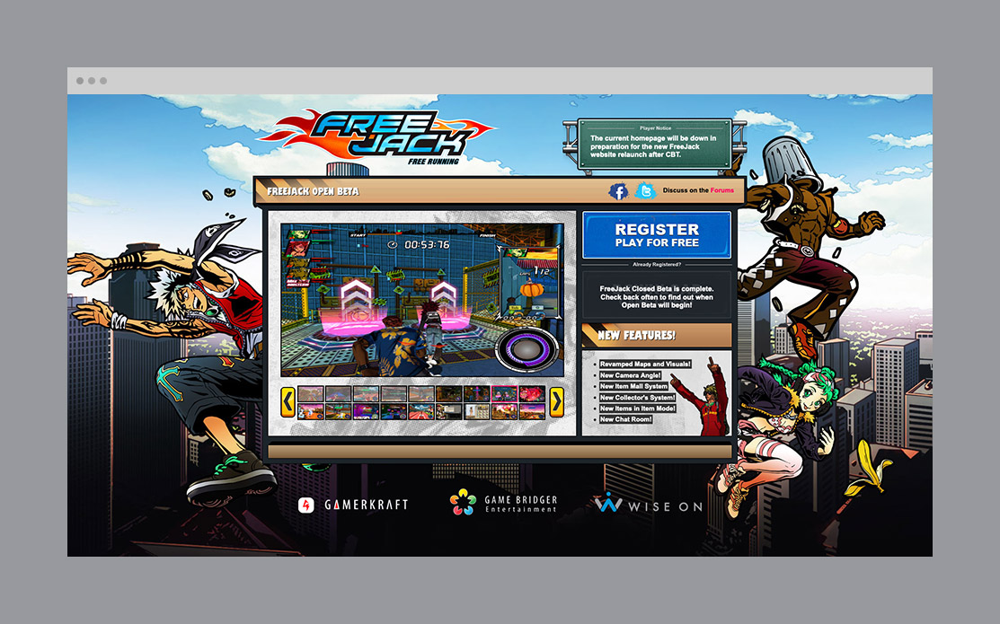
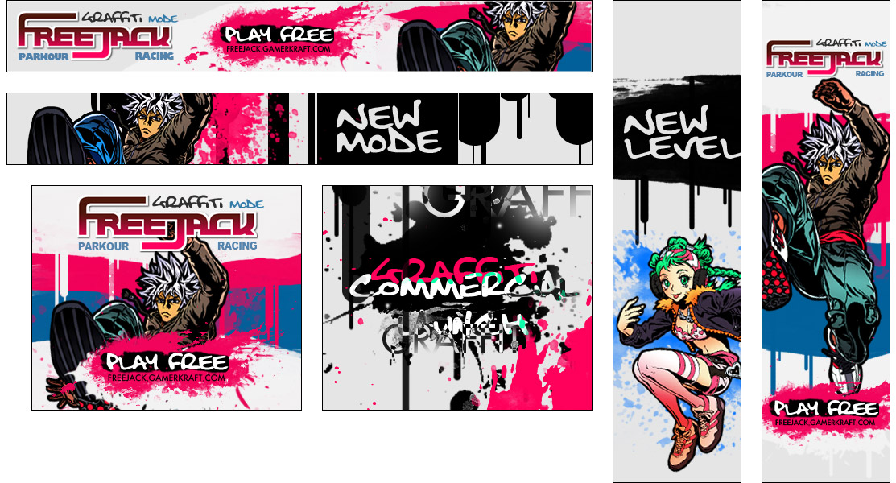
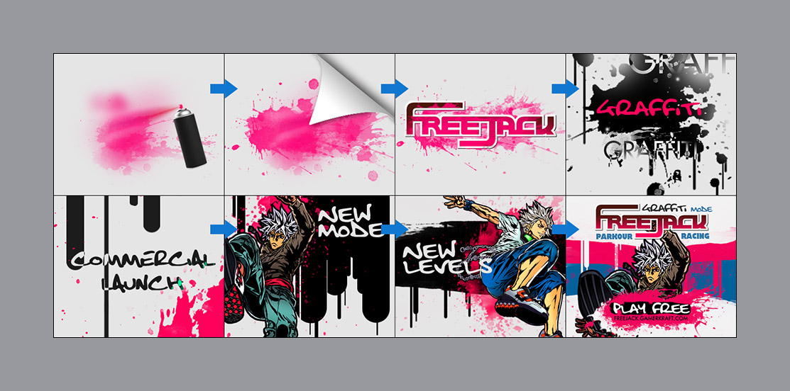
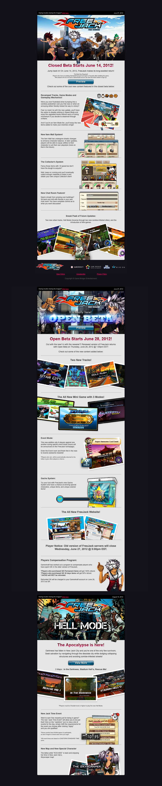

Landing Page

Multiple sizes, specced for Google Ads and animated in Adobe Flash. The end frame adds a tracker to
the character element; allows it to follow the mouse. View the above banners in
action: 336x280728x90160x600

Storyboard for the banner.

Newsletters introducing relaunch of the game. Features the new FreeJack logo and numerous
changes to the gameplay.